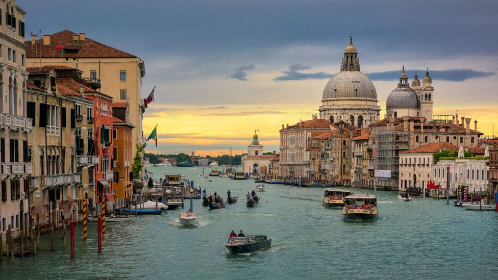

Venice (/ˈvɛnɪs/ VEH-niss; Italian: Venezia [veˈnɛttsja] (About this soundlisten); Venetian: Venesia or Venexia [veˈnɛsja]) is a city in northeastern Italy and the capital of the Veneto region. It is built on a group of 118 small islands[4] that are separated by canals and linked by over 400 bridges.[4][5] The islands are in the shallow Venetian Lagoon, an enclosed bay lying between the mouths of the Po and the Piave rivers (more exactly between the Brenta and the Sile). In 2020, 258,685 people resided in the Comune di Venezia, of whom around 55,000 live in the historical city of Venice (centro storico). Together with Padua and Treviso, the city is included in the Padua-Treviso-Venice Metropolitan Area (PATREVE), which is considered a statistical metropolitan area, with a total population of 2.6 million.[6]
Although no surviving historical records deal directly with the founding of Venice,[19] tradition and the available evidence have led several historians to agree that the original population of Venice consisted of refugees—from nearby Roman cities such as Padua, Aquileia, Treviso, Altino, and Concordia (modern Portogruaro), as well as from the undefended countryside—who were fleeing successive waves of Germanic and Hun invasions.[20] This is further supported by the documentation on the so-called "apostolic families", the twelve founding families of Venice who elected the first doge, who in most cases trace their lineage back to Roman families.[21][22] Some late Roman sources reveal the existence of fishermen, on the islands in the original marshy lagoons, who were referred to as incolae lacunae ("lagoon dwellers"). The traditional founding is identified with the dedication of the first church, that of San Giacomo on the islet of Rialto (Rivoalto, "High Shore")—said to have taken place at the stroke of noon on 25 March 421 (the Feast of the Annunciation)
From the 9th to the 12th century, Venice developed into a city state (an Italian thalassocracy or repubblica marinara; there were three others: Genoa, Pisa, and Amalfi). Its own strategic position at the head of the Adriatic made Venetian naval and commercial power almost invulnerable.[30] With the elimination of pirates along the Dalmatian coast, the city became a flourishing trade center between Western Europe and the rest of the world—especially with the Byzantine Empire and Asia), where its navy protected sea routes against piracy
Venice's long decline started in the 15th century. Venice confronted the Ottoman Empire in the Siege of Thessalonica (1422–1430) and sent ships to help defend Constantinople against the besieging Turks in 1453. After the Fall of Constantinople Sultan Mehmed II declared the first of a series of Ottoman-Venetian wars that cost Venice much of its eastern Mediterranean possessions. Vasco da Gama's 1497–1499 voyage opened a sea route to India around the Cape of Good Hope and destroyed Venice's monopoly. Venice's oared vessels were at a disadvantage when it came to traversing oceans, therefore Venice was left behind in the race for colonies
| Metropolitan city: | Venice |
|---|---|
| Country: | Italy |
| Region: | Vento |